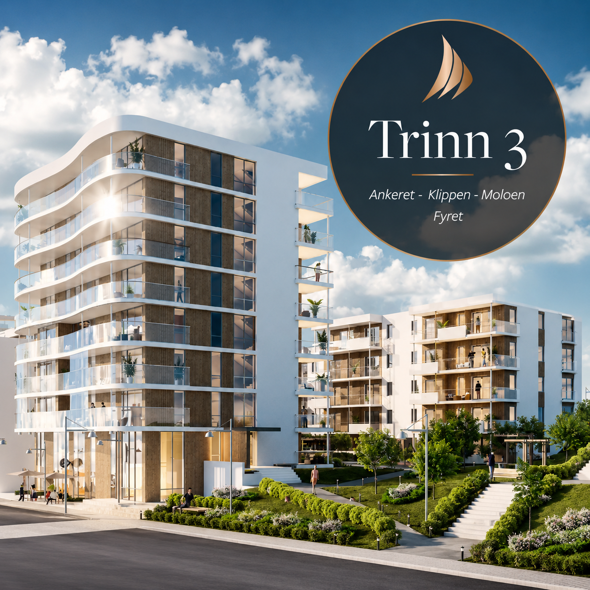

Add your image here'"/>The Nyhavna Øvre initiative is a key component in transforming Trondheim's historic harbour area into a lively and sustainable urban neighbourhood.
During the pre-project phase, I had the honour of collaborating closely with Per Knudsen, one of Trondheim's most esteemed architects. Witnessing his creative process — where concepts emerged from quick sketches on whatever paper was available — was truly inspiring, showcasing his architectural intuition and expertise.
My main responsibility was to convert Per Knudsen's conceptual ideas into accurate digital models using ArchiCAD. This involved ensuring that the designs were feasible while maintaining the artistic essence of his vision. I continuously tested design modifications to comply with BTA and BYA regulations, while also coordinating layout variations and façade developments.
This work demanded meticulous attention to detail, effective collaboration, and a deep understanding of how to harmonise architectural creativity with technical limitations. Although I departed from the company before the project reached its final conception phase, my contributions to the early development of Nyhavna Øvre were both exciting and formative, enhancing my appreciation for conceptual design and teamwork.